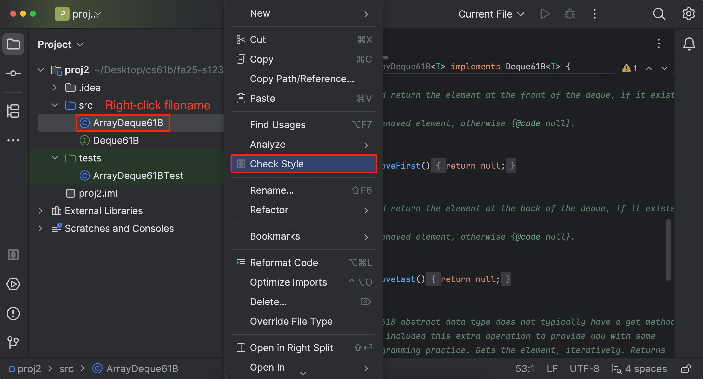

Project 4D: Wordnet (k!=0)
Lectures needed for this project:
- Lecture 16 (Extends, Sets, Maps, and BSTs)
- Lectures 20, 21 (Graph Traversals and Implementations)
Partner policy: No partners. Discussing ideas with other students is allowed, but code sharing is not allowed, and the solutions you submit should be your own work! More details on the policies page.
In this project, you’ll complete your implementation to Wordnet by handling the k != 0 case.
Setup
You will be re-using your proj4cd folder that you created when setting up Project 4C. In other words, there’s no new
code to pull from the skeleton nor are there any new data files you need to download.
Handling k != 0
In Project 4C, we handled the situation where k = 0, which is the default value when the user does not enter a k value.
Your final objective is to handle the case where the user enters k. k represents the maximum number of hyponyms that we want in our output. For example, if someone enters the word “dog”, and then enters k = 5, your code would return exactly 5 words.
To choose the 5 hyponyms, you should return the k words which occurred the most times in the time range requested. For example, if someone entered words = "food, cake", startYear = 1950, endYear = 1990, and k = 5, then you would find the 5 most popular words in that time period that are hyponyms of both food and cake. Here, the popularity is defined as the total number of times the word appears over the entire time period.
The words should then be returned in alphabetical order. In this case, the answer is [cake, cookie, kiss, snap, wafer] if we’re using word_history_size14377.csv, synsets_size82191.txt, and hyponyms_size82191.txt.
Be sure you are getting the words that appear with the highest counts, not the highest weights. Otherwise, you will run into issues that are very difficult to debug!
It might be hard to figure out the hyponyms of words with k != 0 on the big files, so we are providing data that is easier to visualize! Below, you’ll see a modified version of EECS class requirements, inspired by HKN. We have also provided the data that represents the graph below (word_history_eecs.csv, hyponyms_eecs.txt, synsets_eecs.txt). If someone entered words = ["CS61A"], startYear = 2010, endYear = 2020, and k = 4, you should receive "[CS170, CS61A, CS61B, CS61C]". This word_history_eecs.csv is a bit different from the previous one since it has values with the same frequencies. We highly recommend that you take a look at word_history_eecs.csv. While you are designing your implementation, keep in mind that we can give you words with the same frequencies.
The EECS-course guide is not available on the interactive web staff solution so it won’t return anything if you give the input
CS61A. However, the autograder will provide the query information and expected response for any failing test using the EECS dataset. We recommend using this information to replicate the autograder tests locally and debug from there.
Note
- If the front end doesn’t supply a year, default values of
startYear = 1900andendYear = 2020are provided byNGordnetQueryHandler.readQueryMap. - If
k = 0, or the user does not enterk(which results in a default value of zero), then thestartYearandendYearshould be totally ignored. - If a word never occurs in the time frame specified, i.e. the count is zero, it should not be returned. In other words, if
k > 0, we should not show any words that do not appear in thengramsdataset. - If there are no words that have non-zero counts, you should return an empty list, i.e.
[]. - If there are fewer than
kwords with non-zero counts, return only those words. For example if you enter the word “potato” and enter “k = 15”, but only 7 hyponyms of potato have non-zero counts, you’d return only 7 words.
Task 1: Nonzero k
Modify your HyponymsHandler and the rest of your implementation to deal with the k != 0 case.
This task will be a little trickier since you’ll need to figure out how to pass information around such that the
HyponymsHandler knows how to access a “useful” NGramMap.
In addition, we recommend handling the k != 0 case separately from the k == 0 case, as your implementation will be building off of what you’ve already done in Project 4C.
This means your code should still be able to handle the k == 0 case.
TimeSeries
You might have noticed we didn’t provide a
TimeSeriesclass. Remember that aTimeSeriesextends theTreeMapclass, meaning if you want to use any of its equivalent methods, you can substituteTimeSeriesobjects withTreeMapobjects and call the respectiveTreeMapmethod (e.g. instead ofdata()you would usevalues()).NGramMap
Do not make a static NGramMap for this task! It might be tempting to simply make some sort of
public static NGramMapthat can be accessed from anywhere in your code. This is called a "global variable". We strongly discourage this way of thinking about programming, and instead suggest that you should be passing an NGramMap to either constructors or methods. We’ll come back to talking about this during the software engineering lectures.
Task 2: Autograder Buddy
Copy in the
AutograderBuddyimplementation you used to complete Project 4C.
Writing Tests
We have not provided any tests for the k != 0 case.
You can use the sample tests in TestOneWordK0Hyponyms and TestMultiWordK0Hyponyms as a template to create new tests in this new testing file, e.g. tests/TestKNonzeroHyponyms.java.
You’ll need to construct your own test cases. We provide one above: words = "food, cake", startYear = 1950, endYear = 1990, k = 5.
If you need help figuring out what the expected outputs of your tests should be, you can use the staff solution webpage.
Submission
Try submitting to the autograder. You may or may not pass everything.
- If you fail a correctness test, this means that there is a case that your local tests did not cover.
- The autograder will not run unless you fix all your style errors. Reminder that you can check style in IntelliJ as often as you’d like:

- You will have a token limit of 8 tokens every 24 hours. We will not reinstate tokens for failing to add/commit/push your code, run style, etc.
Project 4D will be worth 70 points.
Grading breakdown:
- HyponymHandler k == 0 Single Word (25%)
- HyponymHandler k == 0 Multi Word (25%)
- HyponymHandler k != 0 Single Word (25%)
- HyponymHandler k != 0 Multi Word (25%)
The score you receive on Gradescope is your final score for this assignment (assuming you followed the collaboration policy).
Modifying the Front End
Setup
The remainder of this assignment is optional, but strongly recommended.
This portion of the project combines the powers of NGramMap (Project 4A)
and WordNet (Project 4B, 4C, and 4D). To get started, copy TimeSeries, NGramMap, HistoryHandler and
HistoryTextHandler from Project 4A into
Project 4D. You should also adjust Main.java so that it registers all
three handlers.
Adding New Buttons
Getting a list of hyponyms is cool, but what can sometimes be even cooler is plotting their relative frequencies. For example, if the user enters the words “food, cake”, startYear = 1900, endYear = 2020, k = 8 and clicks “Hypohist”, they’d be able to see the relative frequency of the 8 most popular words which were hyponyms of food and cake over the time period between 1900 and 2020.
In this part, you’ll edit three different types of files:
- HTML
- JavaScript
- Java
We assume that you have NO prior familiarity with HTML or JavaScript. It is very common in real-world projects to have to modify code with which you are not familiar, even possibly in programming languages you have never seen.
Adding the Hypohist Buttons
Open the ngordnet.html file. Locate the code that creates the existing buttons, e.g. History and Hyponyms. Using
your intuition, copy and paste the pieces of code that you think are necessary to create two new buttons that say
“Hypohist” and “Hypohist (text)”.
When you’re done, try clicking the Hypohist button, and nothing will happen.
Creating a Hypohist Handler
Back in Ngordnet.main.Main, register a new Handler called HypohistHandler. It should be registered to the String
hypohist. This handler should simply return the text “hello i am hypohist”. Run your Java server, and it is now ready
to listen for Hypohist clicks.
With your server running, try clicking the Hypohist button, and … still nothing will happen!
JavaScript Callbacks
Even though our server is listening for Hypohist clicks, and we are clicking the Hypohist button, nothing is happening!
That is, your browser isn’t even trying to send the query over to your Java file. This is because HTML code is generally dumb, i.e. basically doesn’t do anything but specify what the website should look like.
The language typically used to describe how a page works is called JavaScript. Despite the name, it has literally nothing to do with Java, and is widely believed to have been a marketing ploy (see this page or this video by JavaScript’s creator Brendan Eich) in the mid-1990s when Java was new and cool, and JavaScript was just coming into existence.
Let’s peer inside the dark universe of front-end JavaScript programming. Open “ngordnet.js”. This is the code that acts as the middleman between the beautiful (?) visual user interface in the browser and your Java code. Note that the HTML and Javascript files for this project are not up to professional standards, and I honestly hacked them together pretty quickly, keeping them as simple as possible so you would feel at least slightly comfortable playing around with them.
Your difficult task: Try modifying the Javascript code so that when you click the “Hypohist” button, you successfully get back the
text outputted by your HypohistHandler, which should be “hello i am hypohist” if you used my exact suggestion above. We suggest not using LLMs for this task, and instead try to figure it out by pure intuition.
The very old-school word for this process of just fumbling your way through a quick and dirty programming job is “hacking”, though the word has many competing meanings these days.
Tips:
- Pattern match carefully!
- Feel free to edit, test, and experiment. You’re not going to break anything permanently.
- Use git checkout to get the original version of the JS file if you break something.
- Don’t cheat by just asking an LLM what to do. This skill of editing and experimenting with code you don’t understand is important when prototyping and hacking together code.
- In the real world, production code should never ship what was created via this hacking process. However, it can be very useful for prototyping!
Hypohist
Next, fill out the handler for the Hypohist button so that it behaves as expected, that is, this button should return a plot of the relative frequency of the words returned by Hyponyms over the period stated.
That is, we’ll do what we said above: For example, if the user enters the words "food, cake", sets startYear=1900,
endYear=2020, and k=8, and clicks the “Hypohist” button, they’d be able to see the relative frequency of the 8 most
popular words which were hyponyms of food and cake over the time period between 1900 and 2020.
Note: Behavior is pretty straightforward if k > 0 for Hypohist. If k = 0, it’s not clear what should happen. Maybe come up with a cool idea.
If you’d like to go above and beyond in this project, read through the Optional Features spec!
The WordNet part of this assignment is loosely adapted from Alina Ene and Kevin Wayne’s Wordnet assignment at Princeton University.